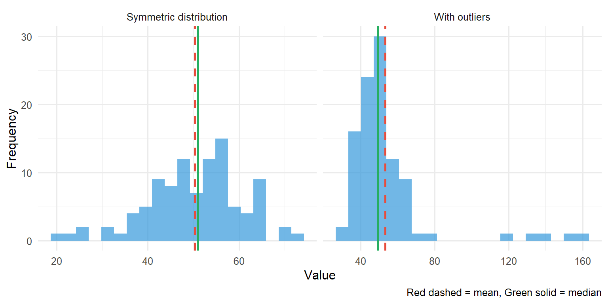

A descriptive measure is a numerical value which summarises a set of data. We represent the number of patients in a sample by the letter n. We often represent the individual values of a variable with a small letter x. The value for patient 1 would be x1, the value for patient 2 would be x2. In a sample of n patients, the value for patient n would be xn.
6.2 Measures of Location or Central Tendency
These give the location of the centre of the data. Representative measures are mean, median, and mode. They are referred to as ‘average’ values – i.e. ‘something in the middle’.
Sample Mean
The sample mean (\(\bar{x}\)) is calculated as:
\[\text{mean} = \frac{\sum x}{n}\]
Where Σx = x1 + x2 + x3 + … + xn is the sum of all values across the subjects, and n is the total number of subjects.
Sample Median
The sample median is the middle value when the observations are ranked from lowest to highest. If n is even, it is the mean of the middle two values.
Its interpretation is that 50% of data values are above the median; 50% are below the median.
Quartiles
Quartiles (Q1, Q2, and Q3) – when the observations are ranked from lowest to highest the quartiles divide a set of data into four parts of equal frequency:
25% of the data values are smaller than Q1 (lower quartile)
50% of the data values are smaller than Q2 (median)
25% of the data values are larger than Q3 (upper quartile)
Sample Mode
The sample mode is the most frequently occurring value. This term is seldom used.
6.3 Measures of Dispersion
Knowing the “average” value of data is not very informative by itself. We also need to know how “concentrated” or “spread out” the data are. That is, we need to know something about the “variability” of the data.
Measures of dispersion are ways of quantifying this numerically. They describe the degree to which the data vary about their average value, their scatter or spread. Representative measures: range, standard deviation, and interquartile range.
Range
Range is simply the difference between the smallest (minimum) and largest (maximum) values in the sample.
Standard Deviation
Standard deviation (SD or sd) is a measure of how far away observations are from the sample mean.
Table 6.1: Summary statistics for SUVmax in 10 lung cancer patients
Measure
Value
Mean (SD)
8.76 (5.43)
Median (IQR)
7.75 (5.5-12.175)
Range
1.8 to 17.9
Reporting Convention
Remember to report means with standard deviations (8.76 (SD 5.43)), and medians with interquartile ranges (7.75 (IQR 5.4-13.1)).
Do not mix means with the interquartile range or medians with standard deviations.
6.5 Which Measures to Choose?
code
set.seed(42)# Normal datanormal_data <-tibble(value =rnorm(100, mean =50, sd =10),type ="Symmetric distribution")# Skewed data with outlierskewed_data <-tibble(value =c(rnorm(95, mean =50, sd =10), 120, 130, 140, 150, 160),type ="With outliers")combined <-bind_rows(normal_data, skewed_data)ggplot(combined, aes(x = value)) +geom_histogram(bins =20, fill ="#3498db", alpha =0.7) +geom_vline(data = combined |>group_by(type) |>summarise(m =mean(value)),aes(xintercept = m), colour ="#e74c3c", linewidth =1, linetype ="dashed") +geom_vline(data = combined |>group_by(type) |>summarise(m =median(value)),aes(xintercept = m), colour ="#27ae60", linewidth =1) +facet_wrap(~type, scales ="free_x") +labs(x ="Value", y ="Frequency",caption ="Red dashed = mean, Green solid = median") +theme_minimal(base_size =12)

Figure 6.1: The median is less influenced by outliers than the mean
The mode should be used when calculating a measure of centre for nominal categorical variables
When the variable is numeric with a symmetric distribution, then the mean is the proper measure of centre
In the case of numeric variables with skewed distribution, the median is a good choice for the measure of centre. The median is less influenced by outlier (extreme) values
The sample mode, the sample median and the sample mean have corresponding population measures. That is, we assume that the variable in question has a population mode, population median, population mean, which are all unknown. The sample mode, the sample median and the sample mean are used to estimate the values of these corresponding unknown population parameters.